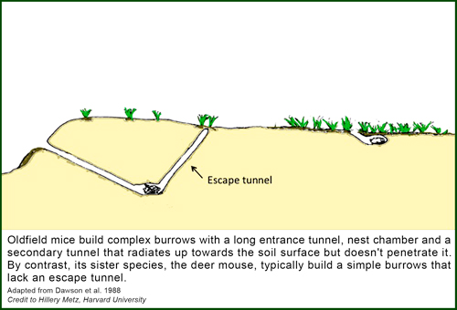

News Archives : 2013 : Digging for Genes that Contribute to Behavioral Evolution [Hoekstra lab]
by Hopi Hoekstra
January 16, 2013
Many animals build elaborate structures—bees make hives, birds build nests, and rodents construct burrows—for which Richard Dawkins coined the term “extended phenotype.” Although these structures are not “alive,” their shapes can evolve when natural selection acts on the behaviour of the architects. Thus, just like we can find genes that contribute to the length of a bone, one can identify genes that contribute to these extended phenotypes, assuming the architect’s behaviour is at least partly heritable. And, in contrast to direct visual observation of complex behaviours, the morphological representations of behavior are much more straightforward to measure!
The goal of this study, which was published in a recent issue of Nature, was to examine the genetic basis of a truly unique, naturally occurring behavior—the complex burrowing of oldfield mice—by focusing on the burrow architecture itself. Oldfield mice (Peromyscus polionotus) dig stereotyped burrows with long entrance tunnels and an escape tunnel that radiates up towards the soil surface but doesn’t quite penetrate it. This complex burrow shape, especially its “secret” backdoor tunnel, is important for the mouse’s survival (e.g., from snake predators) in its exposed open field habitat. These burrows sharply contrast with the much smaller burrows that lack escape tunnels built by their sister species, the deer mouse (P. maniculatus).
The project started in the field, where Jesse Weber, a former graduate student in the Hoekstra Lab and the lead author of this study, excavated burrows from across the range of oldfield mice in the southeastern US. He found that burrow length was remarkably conserved, even in sandy dunes versus hard-packed clay habitats, suggesting that genetics (rather than environment) had a large effect on burrow architecture. This result led us back to the lab, where we could control the environment and focus on the genes. To do this work, we recruited six invaluable Harvard undergraduates, who literally got their hands dirty, helping with our burrowing assays.
In a controlled laboratory environment, Jesse showed that both species of mice recapitulate their wild burrowing architectures, even laboratory-raised animals that hadn’t seen dirt before (again, supporting the notion that this behavior has a genetic component). Then he started to breed the mice together. Using a genetic cross between the complex (polionotus) and simple (maniculatus) burrowing species, we found that first-generation hybrids build complex burrows, suggesting that the underlying alleles responsible for these complex burrows are largely dominant. In second-generation hybrids, tunnel length and presence of escape tunnel segregate independently, suggesting these traits represent distinct behavioral modules controlled by different genes. Together these experiments suggested that the derived complex burrows built by oldfield mice evolved from a simple burrow through changes in two independent behaviors: the lengthening of the burrow’s entrance tunnel and the construction of an escape tunnel.
Using a new genotyping-by-sequencing method developed by postdoc Brant Peterson, we next aimed to identify the genomic regions responsible for differences in burrow architecture. Quite surprisingly, the difference in burrow size and shape seemed to be largely controlled by only a few regions in the genome. Specifically, we found that tunnel length is affected by three independent genetic regions, each of which contributes roughly equally to increased burrow length (i.e., each of these regions is associated with a 3 cm increase in burrow length). By contrast, escape tunnel construction is a discrete trait, largely influenced by a single locus, which increases the probability of building an escape tunnel by 30%. Thus, behavioral differences may require just a few genetic changes.
Because we know little about the genetic basis of behavioral evolution, at least relative to morphological traits, many questions remain unanswered. This study tackled one longstanding question: do complex behaviors evolve through a few genetic changes which each affect many aspects of behavior, or through the accumulation of several genetic changes that only when combined give rise to behavioral complexity? Our results suggest that complex behaviors can, at least in some cases, evolve through the addition of independent behavioral modules, each controlled by different genetic changes. More generally, we suggest that different combinations of these modules may help explain the vast range of behavioral diversity we observe in nature.

Read more in nature or download PDF
Read more in The New York Times (January 16, 2013), The New York Times (January 28, 2013)
Read more in National Geographic
Read more in Harvardgazette